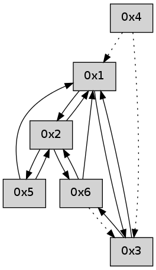

>> << IDX [start] -100 -25 -5 +0 +5 +25 +100 [490.28937602]
 Previous packets
----------------------------------------------------------------------
485.368294 beacon01(adaf) #0 coord=01,02,05,03,04,06 cycle=432.0ms assoc
-- color-indic=0 64 6c 75
485.378254 beacon02(adaf) #0 coord=01,02,05,03,04,06 cycle=432.0ms assoc 64 3d 8a
485.388255 beacon05(adaf) #0 coord=01,02,05,03,04,06 cycle=432.0ms assoc 64 9b a0
485.398255 beacon03(adaf) #0 coord=01,02,05,03,04,06 cycle=432.0ms assoc 64 07 84
485.408255 beacon04(adaf) #0 coord=01,02,05,03,04,06 cycle=432.0ms assoc 64 a1 ae
485.418256 beacon06(adaf) #0 coord=01,02,05,03,04,06 cycle=432.0ms assoc 64 d5 b2
485.429636 [Hello(1): seq=183 sym=3 sysInfo= stat=3:15,0,0,0]
485.433576 [Hello(4): seq=284 asym=3,1 sysInfo= stat=3:15,0,0,0/1:0,0,0,0]
----------------------------------------------------------------------
485.860401 beacon01(adaf) #0 coord=01,02,05,03,04,06 cycle=432.0ms assoc
-- color-indic=0 64 a8 1a
485.870363 beacon02(adaf) #0 coord=01,02,05,03,04,06 cycle=432.0ms assoc 64 f9 e5
485.880363 beacon05(adaf) #0 coord=01,02,05,03,04,06 cycle=432.0ms assoc 64 5f cf
485.890362 beacon03(adaf) #0 coord=01,02,05,03,04,06 cycle=432.0ms assoc 64 c3 eb
485.900362 beacon04(adaf) #0 coord=01,02,05,03,04,06 cycle=432.0ms assoc 64 65 c1
485.910364 beacon06(adaf) #0 coord=01,02,05,03,04,06 cycle=432.0ms assoc 64 11 dd
485.922006 [Hello(3): seq=284 sym=6,1 sysInfo= stat=6:0,0,0,0/1:6,0,0,0]
----------------------------------------------------------------------
486.352510 beacon01(adaf) #0 coord=01,02,05,03,04,06 cycle=432.0ms assoc
-- color-indic=0 64 f6 7b
486.362470 beacon02(adaf) #0 coord=01,02,05,03,04,06 cycle=432.0ms assoc 64 a7 84
486.372470 beacon05(adaf) #0 coord=01,02,05,03,04,06 cycle=432.0ms assoc 64 01 ae
486.382471 beacon03(adaf) #0 coord=01,02,05,03,04,06 cycle=432.0ms assoc 64 9d 8a
486.392471 beacon04(adaf) #0 coord=01,02,05,03,04,06 cycle=432.0ms assoc 64 3b a0
486.402471 beacon06(adaf) #0 coord=01,02,05,03,04,06 cycle=432.0ms assoc 64 4f bc
486.414122 [Hello(4): seq=285 asym=3,1 sysInfo= stat=3:0,0,0,0/1:0,0,0,0]
486.419774 [Hello(1): seq=184 sym=2,3 sysInfo= stat=2:0,0,0,0/3:0,0,0,0]
----------------------------------------------------------------------
486.844617 beacon01(adaf) #0 coord=01,02,05,03,04,06 cycle=432.0ms assoc
-- color-indic=0 64 32 14
486.854579 beacon02(adaf) #0 coord=01,02,05,03,04,06 cycle=432.0ms assoc 64 63 eb
486.864578 beacon05(adaf) #0 coord=01,02,05,03,04,06 cycle=432.0ms assoc 64 c5 c1
486.874578 beacon03(adaf) #0 coord=01,02,05,03,04,06 cycle=432.0ms assoc 64 59 e5
486.884580 beacon04(adaf) #0 coord=01,02,05,03,04,06 cycle=432.0ms assoc 64 ff cf
486.894581 beacon06(adaf) #0 coord=01,02,05,03,04,06 cycle=432.0ms assoc 64 8b d3
486.906203 [Hello(3): seq=285 sym=6,1 sysInfo= stat=6:1,0,0,0/1:7,0,0,0]
----------------------------------------------------------------------
487.336725 beacon01(adaf) #0 coord=01,02,05,03,04,06 cycle=432.0ms assoc
-- color-indic=0 64 7e a4
487.346685 beacon02(adaf) #0 coord=01,02,05,03,04,06 cycle=432.0ms assoc 64 2f 5b
487.356688 beacon05(adaf) #0 coord=01,02,05,03,04,06 cycle=432.0ms assoc 64 89 71
487.366686 beacon03(adaf) #0 coord=01,02,05,03,04,06 cycle=432.0ms assoc 64 15 55
487.376686 beacon04(adaf) #0 coord=01,02,05,03,04,06 cycle=432.0ms assoc 64 b3 7f
487.386686 beacon06(adaf) #0 coord=01,02,05,03,04,06 cycle=432.0ms assoc 64 c7 63
487.398354 [Hello(4): seq=286 asym=3,1 sysInfo= stat=3:1,0,0,0/1:1,0,0,0]
487.403664 [Hello(1): seq=185 sym=2,3 sysInfo= stat=2:0,0,0,0/3:1,0,0,0]
----------------------------------------------------------------------
487.828834 beacon01(adaf) #0 coord=01,02,05,03,04,06 cycle=432.0ms assoc
-- color-indic=0 64 ba cb
487.838796 beacon02(adaf) #0 coord=01,02,05,03,04,06 cycle=432.0ms assoc 64 eb 34
487.848796 beacon05(adaf) #0 coord=01,02,05,03,04,06 cycle=432.0ms assoc 64 4d 1e
487.858795 beacon03(adaf) #0 coord=01,02,05,03,04,06 cycle=432.0ms assoc 64 d1 3a
487.868797 beacon04(adaf) #0 coord=01,02,05,03,04,06 cycle=432.0ms assoc 64 77 10
487.878798 beacon06(adaf) #0 coord=01,02,05,03,04,06 cycle=432.0ms assoc 64 03 0c
487.890437 [Hello(3): seq=286 sym=6,1 sysInfo= stat=6:2,0,0,0/1:8,0,0,0]
----------------------------------------------------------------------
488.320943 beacon01(adaf) #0 coord=01,02,05,03,04,06 cycle=432.0ms assoc
-- color-indic=0 64 f7 cc
488.330903 beacon02(adaf) #0 coord=01,02,05,03,04,06 cycle=432.0ms assoc 64 a6 33
488.340903 beacon05(adaf) #0 coord=01,02,05,03,04,06 cycle=432.0ms assoc 64 00 19
488.350904 beacon03(adaf) #0 coord=01,02,05,03,04,06 cycle=432.0ms assoc 64 9c 3d
488.360904 beacon04(adaf) #0 coord=01,02,05,03,04,06 cycle=432.0ms assoc 64 3a 17
488.370905 beacon06(adaf) #0 coord=01,02,05,03,04,06 cycle=432.0ms assoc 64 4e 0b
488.382549 [Hello(4): seq=287 asym=3,1 sysInfo= stat=3:2,0,0,0/1:2,0,0,0]
488.388209 [Hello(1): seq=186 sym=2,3 sysInfo= stat=2:0,0,0,0/3:2,0,0,0]
----------------------------------------------------------------------
488.813050 beacon01(adaf) #0 coord=01,02,05,03,04,06 cycle=432.0ms assoc
-- color-indic=0 64 33 a3
488.823010 beacon02(adaf) #0 coord=01,02,05,03,04,06 cycle=432.0ms assoc 64 62 5c
488.833011 beacon05(adaf) #0 coord=01,02,05,03,04,06 cycle=432.0ms assoc 64 c4 76
488.843012 beacon03(adaf) #0 coord=01,02,05,03,04,06 cycle=432.0ms assoc 64 58 52
488.853012 beacon04(adaf) #0 coord=01,02,05,03,04,06 cycle=432.0ms assoc 64 fe 78
488.863013 beacon06(adaf) #0 coord=01,02,05,03,04,06 cycle=432.0ms assoc 64 8a 64
488.874658 [Hello(3): seq=287 sym=6,1 sysInfo= stat=6:3,0,0,0/1:9,0,0,0]
----------------------------------------------------------------------
489.305157 beacon01(adaf) #0 coord=01,02,05,03,04,06 cycle=432.0ms assoc
-- color-indic=0 64 7f 13
489.315118 beacon02(adaf) #0 coord=01,02,05,03,04,06 cycle=432.0ms assoc 64 2e ec
489.325119 beacon05(adaf) #0 coord=01,02,05,03,04,06 cycle=432.0ms assoc 64 88 c6
489.335119 beacon03(adaf) #0 coord=01,02,05,03,04,06 cycle=432.0ms assoc 64 14 e2
489.345120 beacon04(adaf) #0 coord=01,02,05,03,04,06 cycle=432.0ms assoc 64 b2 c8
489.355120 beacon06(adaf) #0 coord=01,02,05,03,04,06 cycle=432.0ms assoc 64 c6 d4
489.366787 [Hello(4): seq=288 asym=3,1 sysInfo= stat=3:3,0,0,0/1:3,0,0,0]
----------------------------------------------------------------------
489.797268 beacon01(adaf) #0 coord=01,02,05,03,04,06 cycle=432.0ms assoc
-- color-indic=0 64 bb 7c
489.807230 beacon02(adaf) #0 coord=01,02,05,03,04,06 cycle=432.0ms assoc 64 ea 83
489.817228 beacon05(adaf) #0 coord=01,02,05,03,04,06 cycle=432.0ms assoc 64 4c a9
489.827229 beacon03(adaf) #0 coord=01,02,05,03,04,06 cycle=432.0ms assoc 64 d0 8d
489.837229 beacon04(adaf) #0 coord=01,02,05,03,04,06 cycle=432.0ms assoc 64 76 a7
489.847231 beacon06(adaf) #0 coord=01,02,05,03,04,06 cycle=432.0ms assoc 64 02 bb
489.858890 [Hello(3): seq=288 sym=6,1 sysInfo= stat=6:4,0,0,0/1:9,0,0,0]